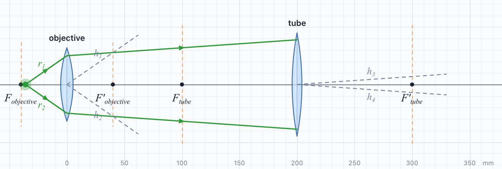
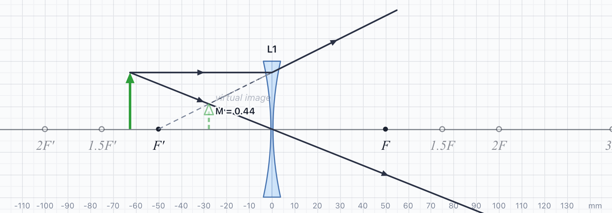
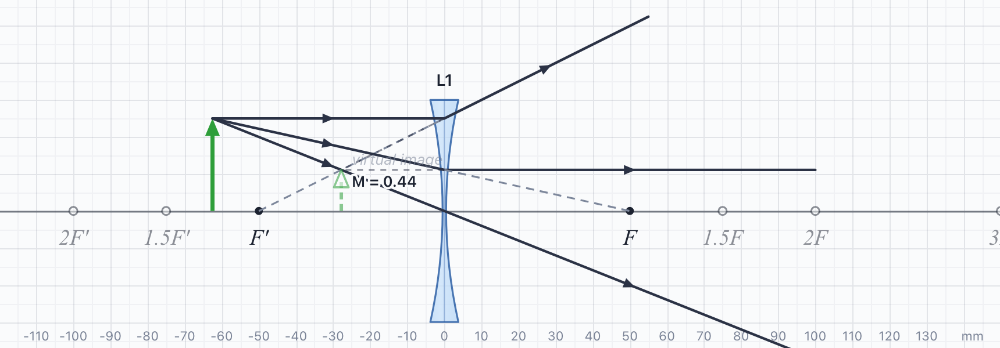
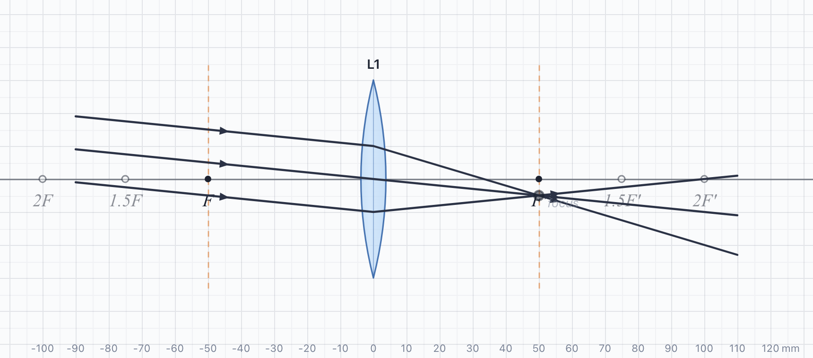
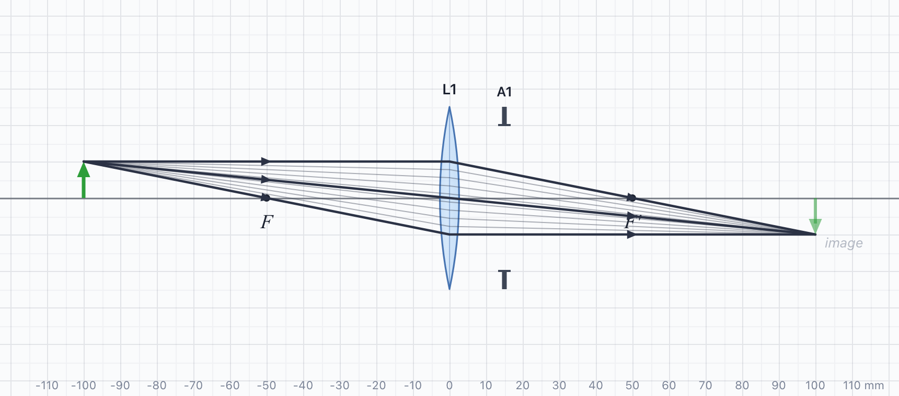
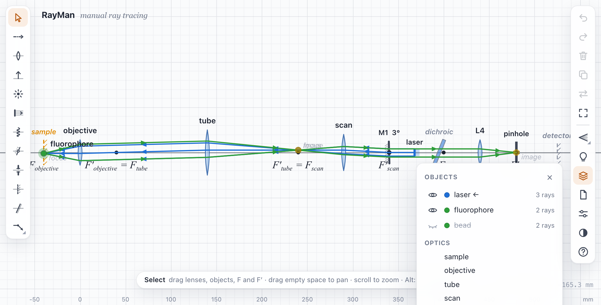

Helper rays
A helper ray is a dashed construction line. It never forms images. Choose it from the corner of the Ray tool, or press H (R goes back to ordinary rays).
To trace any ray through a lens: draw a helper from the lens centre, parallel to that ray. The ray leaves the lens through the point where the helper crosses the back focal plane (snap through that ray at the back focal plane). Repeat at each lens. Turn on Show focal planes in the lenses' panels.
Why this works: the helper starts at the lens, but the ray it copies is behind the lens. RayMan offers parallel to that ray for any ray on the bench, wherever it is: swing the helper until the ray behind it glows, then click. A ray drawn parallel to a helper wins over other snaps nearby, and every ray parallel to it glows.
Example: a source just inside F of an objective, then a tube lens.




Select a ray and press N to name it (r1 is drawn as r₁).
A negative lens
Its image is virtual: turn on Show virtual images in Settings. F′ is now on the left.
- Place a lens and give it a negative f in its panel.
- Place an object a little shorter than the lens, between F′ and 1.5F′.
- From the tip, a ray through the centre: it carries straight on.
- From the tip, a ray parallel to the axis to the lens.
- A helper (H) from F′ to the end of that ray.
- Back to rays (R): continue the ray parallel to that ray (the helper). The virtual image appears where the helper meets the first ray.
- From the tip, a ray through F on the far side: it stops at the lens. Continue it parallel to the axis. A helper from the lens to F shows where it was aimed.


Clicking a ray's end continues it only if it is the kind you are drawing: with R, a helper's end starts a new ordinary ray.
Light from infinity
A ray started at a free point comes from a point at infinity. Rays drawn parallel to the axis, or parallel to that ray, share that point. Where they cross after a lens, RayMan marks a focus. The rays carry on past it.

Leaving a lens, a ray can also snap bent by the lens: the way an ideal thin lens bends it, for rays no classic rule covers.
Irises and fill-in rays
An iris stops rays that meet its blades. Drag the edges of its opening, or use the slider in its panel. Its centre and edges are points to aim through. It lines up with focal points and images: an aperture stop in a focal plane, a field stop in an image plane.
Fill-in (B) adds faint rays between the outermost rays of each bundle, interpolated from the rays you drew. Irises clip them too.


The examples/kohler/ files (File → Open…) build Köhler illumination step by step.
The Objects panel
Press E (or the layers icon) to list the light sources. The eye switches a source off, with its rays and anything drawn from them, and back on. Helper rays have their own switch.

Install as an app
RayMan can sit on the home screen of an iPad, iPhone or Android device and open like an app, without the browser's bars. It still comes from the website, so it updates with it. After the first visit it also works offline.
iPad and iPhone (Safari)
- Open RayMan in Safari.
- Tap Share (the square with an arrow, by the address bar; on newer iPadOS it may be under ⋯).
- Choose Add to Home Screen, then Add.
The app keeps its own saved bench, separate from Safari's: use File → Save and Open to move work between them. To pick up a new icon, remove the app and add it again.
Android (Chrome)
- Open RayMan in Chrome.
- Tap ⋮, then Install app (or Add to Home screen).
Chrome may also offer to install it by itself. The app shares Chrome's saved bench.